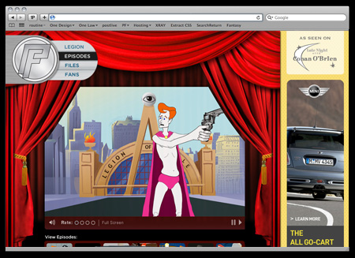
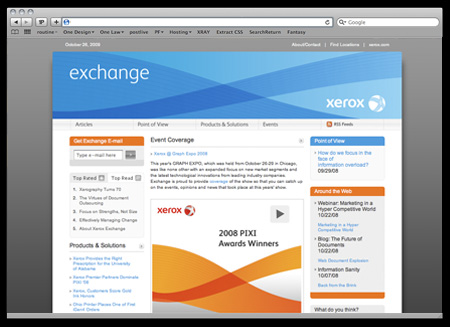
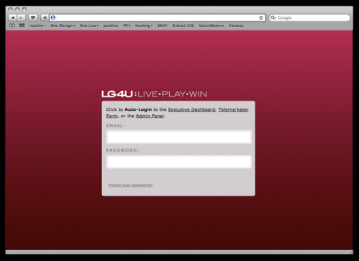
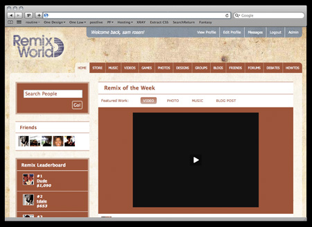
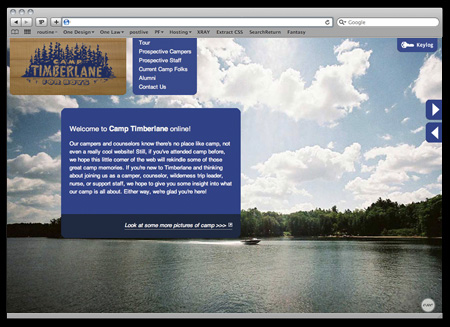
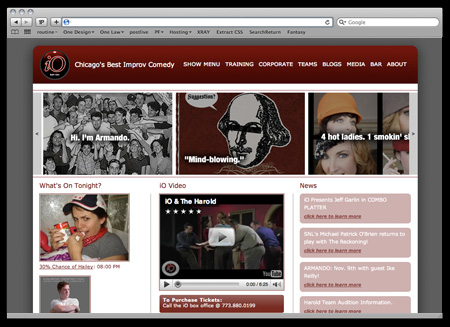

new york magazinei had the wonderful opportunity to work with new york magazine and ds9 here in chicago. i concepted and designed the entire site design as well as shot the photography for new york's famous design week.
conan o'brienover the last few years i've had the opportunity to pitch a bunch of work directly to the late night show with conan o'brien. this direction was a pitch for a micro-site representing jim gaffigan's "pale force."

xerox-exchangein association with imagination publishing and under a killer holiday deadline, for the launch of xerox's new brand. i led a team and help design this internal xerox site as well as build it to it's completion.www.xerox-exchange.com

lg metricslg hired us to build a tool that allowed high level exectives to get a realtime look into promotional events as well as a telemarketing campaign. i designed a dashboardesk tool that computed and segmented real-time data from all of these sources into one easy to use interface.www.xerox-exchange.com

iremix - university of chicagoone of our biggest projects to date, i led our design team (with help from chad kouri) in developing this special site. remix world is a informal learning space online, this robust social network allows students to collaborate online and it's a pretty amazing program.www.iremix.org

camp timberlane for boysa little dream come true (kind of) i was hired to design a website for the summer camp of my child hood. take a look at the site we modeled an interactive version of the summer camp and built a robust user system that allows parents, counslers, alumni and campers to all to have special access to their site.www.camptimberlane.com

ioimprovi was in charge of the redesign of ioimprov.com.www.ioimprov.com

nick taylor, dpi designed a simple portfolio website for nick taylor. the site mainly uses javascript towww.nicktaylordp.com